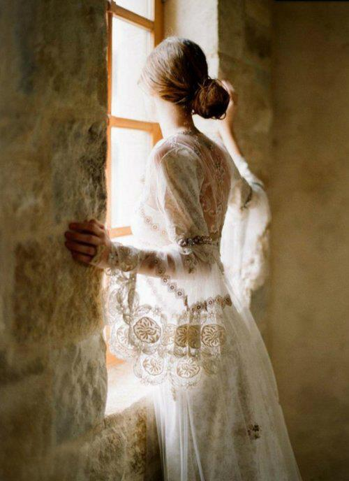

Ty zawczasu utracona
Marianna Alcoforado, Gaspara Stampa, Safona, Heloiza, Eleonora Duse, Anna de Noailles. Wielkie miłujące, które wzniosły się ponad pragnienie, by ich miłość została odwzajemniona.
Rilke snuje myśli o książce, zawierającej kilka portretów kobiet, które przeżywszy rozczarowanie nieszczęśliwej miłości, znalazły spełnienie wewnętrznego powołania poza sferą przytłaczającej namiętności. Poeta odkrywa w nich ową niewysłowioną sensualité de l’âme, zmysłowość duszy, która od czasów Safony jest jednym z wielkich przeobrażeń świata.
Los tych kobiet był mu szalenie bliski — wspomina księżna Marie von Thurn und Taxis na kartach swych „Wspomnień” — stał się dlań bolesną rzeczywistością, która nim owładnęła. Mówiąc o nich, dobierał słów tchnących przenikliwą siłą i bezgraniczną delikatnością.
Cóż za bezwzględna wspaniałość, jakże to zarazem straszne wzniecać płomień miłości, cóż za pożoga, nieszczęście, upadek — pisał poeta o listach portugalskiej zakonnicy Marianny Alcoforado. — Ach, jeśliby człowiek mógł samemu płonąć, byłoby to doprawdy warte życia i śmierci.
Rilke pragnął zawsze rzeczy niezwykłych, także, i przede wszystkim, w miłości. Wpatrzony w wizerunki „nieszczęśliwie miłujących” sam bezustannie poszukiwał swej ukochanej, której obraz, hołubiony w sercu, wciąż mu umykał. Poeta nie potrafił żyć bez owej przenikającej go atmosfery kobiecości, ciągłego zakochania. A jednak nie mógł wyzbyć się świadomości, iż zawsze, prędzej czy później, czeka go rozstanie, że każda z jego ukochanych przemieni się w tę utraconą, zaklętą w nieśmiertelnych wersach:
Ty zawczasu
utracona kochanko. Ty, która nigdy nie przyszłaś,
nie wiem, jakiej muzyki tony lubisz.
Nie próbuję, gdy rozkołysze się przyszłość,
rozpoznać ciebie. Wszystkie wielkie
obrazy we mnie, w oddali doświadczony krajobraz,
miasta, wieże i mosty i nie
przeczuwany zakręt drogi,
i potęga krajów
owych, przenikniętych niegdyś przez bogów:
wszystko urasta we mnie do znaczenia
dzięki tobie, która mi umykasz.
Ach, ogrodami jesteś,
ach, patrzałem na nie z taką
nadzieją. Otwarte okno
w willi wiejskiej — i prawie
zbliżałaś się do mnie w zadumie. Znajdowałem
ulice, którymi właśnie przechodziłaś —
i lustra w sklepach handlarzy
miały jeszcze zawrót głowy po tobie i zlęknione
odrzucały mój zbyt nagły obraz. — Kto wie, czy nie ten sam
ptak przelatywał nas dźwiękiem
wczoraj, osobno, w wieczorze?
Wiersz Rilkego „Ty zawczasu utracona” w przekładzie M. Jastruna.